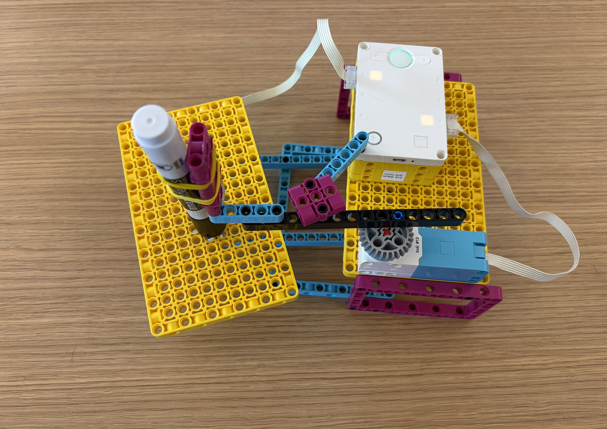
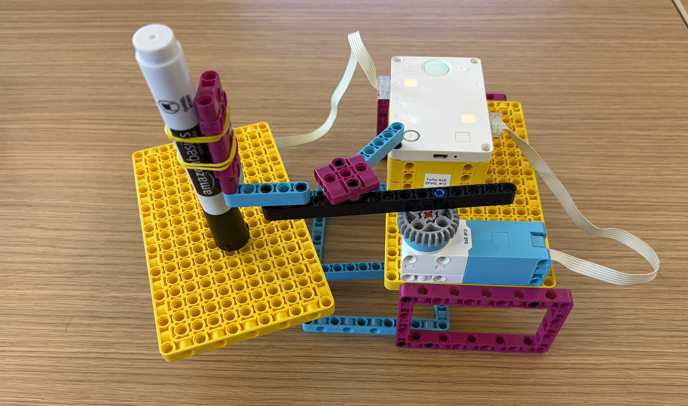

To make my spirograph, I started with only using one motor, having one part that stays stationary while the other part rotates around with the motor. I found that this was the best way to start to create a spiral pattern. This was my version one. After, I decided that I wanted to add another motor to create more complex patterns. This allowed me to have multiple rotating parts, each with its own speed and direction, resulting in a more intricate and dynamic spirograph design. I used the motor to spin the base that the paper was on, and I found that I had to elevate the marker so that everything would stil run smoothly. By using rubber bands to hold the marker in place, I found that more rubber bands made the marker more stable, and with less it would wiggle, creating a different design. I used two rubber bands to hold the marker in place. However, I noticed that in my final video, the marker wasn't drawing the whole time. I believe that this is due to the chisled tip of the marker, as it did not occur in testing when I used a pen.